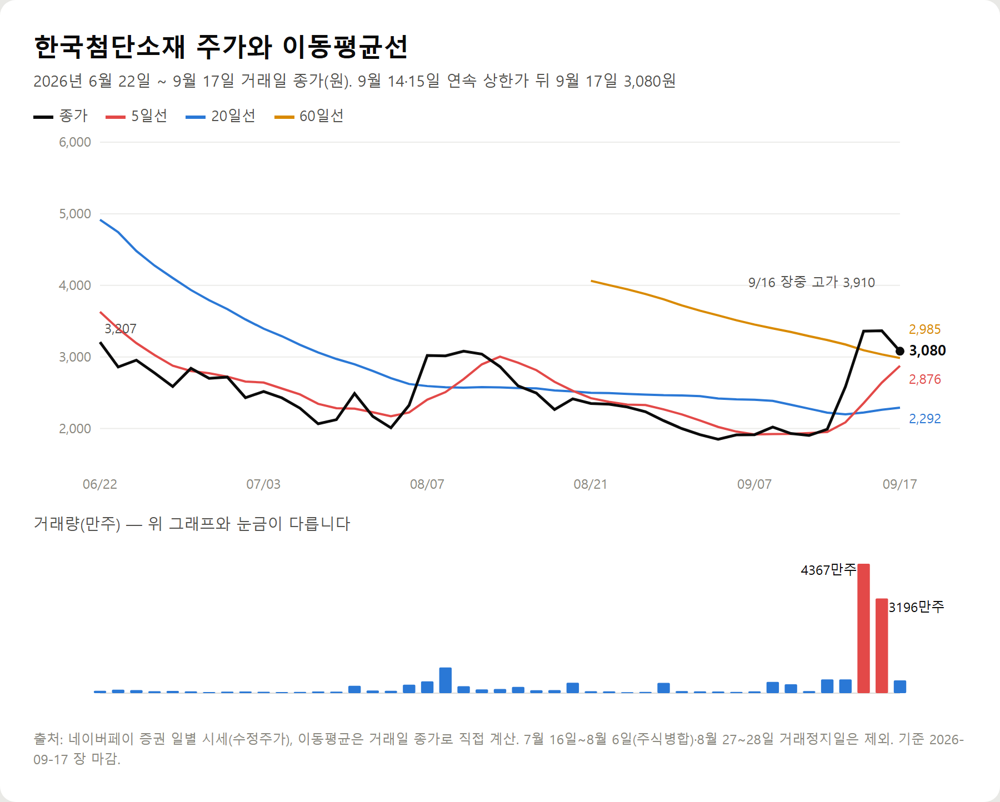
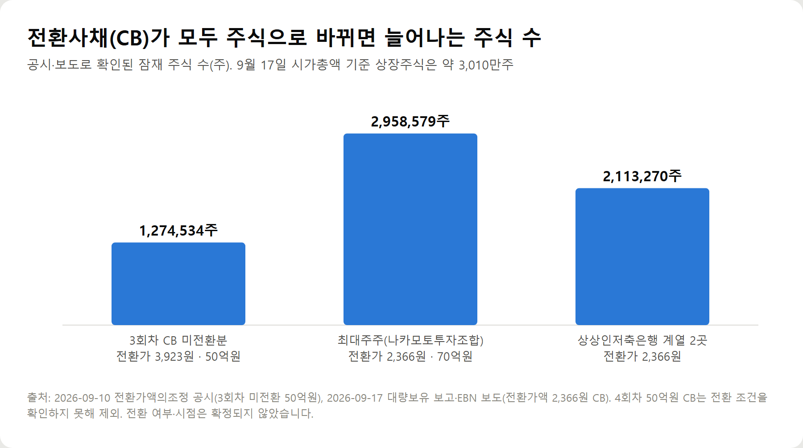
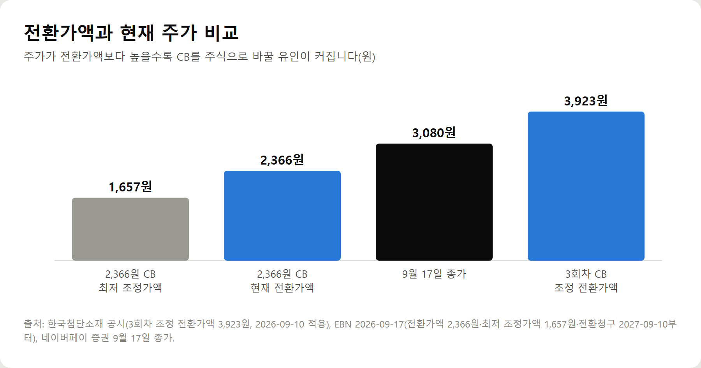

<meta charset="utf-8">
<title>한국첨단소재 주가 전망｜양자암호·광통신 관련주와 CB 물량 — 나의 투자 그리고 행복한 여행</title>
<meta name="description" content="한국첨단소재 주가 전망(2026년 9월 17일 기준): 종가 3,080원, 양자암호통신·차세대 광통신 사업화의 회사 측 계획과 확인할 조건, CB 전환가액·잠재 주식 약 634만주, 5·20·60일선 차트 분석과 FAQ.">
<meta name="viewport" content="width=device-width, initial-scale=1">
<link rel="canonical" href="https://worldtraveler1.tistory.com/85">
<link rel="preconnect" href="https://fonts.googleapis.com">
<link rel="preconnect" href="https://fonts.gstatic.com" crossorigin>
<link rel="stylesheet" href="https://fonts.googleapis.com/css2?family=Hahmlet:wght@400;600;800&family=IBM+Plex+Mono:wght@400;500&family=IBM+Plex+Sans+KR:wght@300;400;500;600&display=swap">

<style>
  :root{
    --paper:#F2EEE6;--surface:#FAF8F3;--surface-2:#E7E1D5;
    --ink:#191510;--ink-2:#4A4235;--ink-3:#7D7364;
    --line:#D6CEBF;--line-soft:#E4DDD0;--accent:#B06A15;--accent-bright:#C2761A;
    --up:#E5484D;--down:#3B82F6;
    --f-display:"Hahmlet",'Nanum Myeongjo',"Apple SD Gothic Neo",serif;
    --f-body:"IBM Plex Sans KR","Apple SD Gothic Neo","Malgun Gothic",sans-serif;
    --f-mono:"IBM Plex Mono","SFMono-Regular",Consolas,monospace;
    --pad:clamp(20px,5vw,64px);
  }
  @media (prefers-color-scheme:dark){
    :root:not([data-theme="light"]){
      --paper:#0B1120;--surface:#121A2C;--surface-2:#1A2439;
      --ink:#E9EEF7;--ink-2:#A9B5C9;--ink-3:#72809A;
      --line:#26314A;--line-soft:#1D2739;--accent:#E8A33D;--accent-bright:#F0B45C;
    }
  }
  *{box-sizing:border-box;}
  body{margin:0;background:var(--paper);color:var(--ink);font-family:var(--f-body);
    font-weight:300;font-size:1rem;line-height:1.75;-webkit-font-smoothing:antialiased;}
  a{color:inherit;}
  img{max-width:100%;height:auto;}
  .wrap{max-width:760px;margin:0 auto;padding-inline:var(--pad);}
  .nav{position:sticky;top:0;z-index:20;background:color-mix(in srgb,var(--paper) 88%,transparent);
    backdrop-filter:saturate(180%) blur(12px);border-bottom:1px solid var(--line);}
  .nav-in{display:flex;align-items:center;justify-content:space-between;height:58px;}
  .brand{font-family:var(--f-display);font-weight:600;font-size:1rem;letter-spacing:-.02em;text-decoration:none;}
  .back{font-family:var(--f-mono);font-size:.72rem;color:var(--ink-3);text-decoration:none;}
  .article{padding-block:clamp(40px,7vw,72px) clamp(56px,9vw,96px);}
  .eyebrow{font-family:var(--f-mono);font-size:.68rem;letter-spacing:.16em;text-transform:uppercase;
    color:var(--accent);margin:0 0 14px;}
  h1{font-family:var(--f-display);font-weight:800;font-size:clamp(1.6rem,4.4vw,2.3rem);
    line-height:1.3;letter-spacing:-.03em;margin:0 0 16px;}
  .byline{font-family:var(--f-mono);font-size:.72rem;color:var(--ink-3);
    padding-bottom:24px;border-bottom:1px solid var(--line);margin-bottom:32px;}
  h2{font-family:var(--f-display);font-weight:600;font-size:1.25rem;letter-spacing:-.02em;margin:42px 0 14px;}
  h3{font-family:var(--f-display);font-weight:600;font-size:1.05rem;letter-spacing:-.02em;
    margin:30px 0 10px;padding-top:14px;border-top:1px solid var(--line-soft);}
  h3 .code{font-family:var(--f-mono);font-size:.7rem;font-weight:400;color:var(--ink-3);margin-left:6px;}
  p{margin:0 0 18px;color:var(--ink-2);}
  ul.checks{margin:0 0 18px;padding-left:20px;color:var(--ink-2);}
  ul.checks li{margin-bottom:8px;font-size:.94rem;}
  table{width:100%;border-collapse:collapse;font-size:.88rem;margin-bottom:8px;}
  th{font-family:var(--f-mono);font-size:.66rem;letter-spacing:.06em;text-transform:uppercase;
    color:var(--ink-3);text-align:right;padding:8px 6px;border-bottom:1px solid var(--line);}
  th:first-child{text-align:left;}
  td{padding:10px 6px;border-bottom:1px solid var(--line-soft);color:var(--ink-2);}
  td.num{font-family:var(--f-mono);text-align:right;font-variant-numeric:tabular-nums;}
  td.up{color:var(--up);} td.down{color:var(--down);}
  .scroll{overflow-x:auto;}
  figure{margin:22px 0;}
  figure img{display:block;border-radius:3px;background:var(--surface-2);}
  figcaption{margin-top:8px;font-family:var(--f-mono);font-size:.68rem;color:var(--ink-3);text-align:center;}
  .note{margin-top:34px;padding:16px 18px;border-left:3px solid var(--accent);
    background:var(--surface);border-radius:0 3px 3px 0;}
  .note p{margin:0;font-size:.85rem;color:var(--ink-3);}
  .foot{border-top:1px solid var(--line);background:var(--surface);padding-block:30px 38px;}
  .foot p{margin:0;font-size:.8rem;color:var(--ink-3);}
</style>

<nav class="nav">
  <div class="wrap nav-in">
    <a class="brand" href="../index.html">나의 투자 그리고 행복한 여행</a>
    <a class="back" href="../index.html#stocks">← 시황으로</a>
  </div>
</nav>

<main class="wrap article">
  <p class="eyebrow">Market</p>
  <h1>한국첨단소재 주가 전망｜양자암호통신·광통신 관련주 분석과 CB 물량 (2026년 9월 17일 기준)</h1>
  <p class="byline">주식 · 2026-09-17 기준</p>

  <p><b>이 포스팅은 네이버 쇼핑 커넥트 활동의 일환으로, 판매 발생 시 수수료를 제공받습니다.</b></p>
  <p><b>이 포스팅은 쿠팡 파트너스 활동의 일환으로, 구매 시 수수료를 제공받습니다.</b></p>
  <p>한 줄 요약: 한국첨단소재 주가는 9월 17일 3,080원(5거래일 +61.76%)입니다. 양자통신·차세대 광통신 사업화는 회사 측 계획 단계이고, 전환가액 2,366원·3,923원 CB가 합계 약 634만주 잠재 물량으로 남아 있습니다.</p>
  <p>이 글은 2026년 9월 17일 장 마감 기준 공개 시세·공시·보도만 정리했으며 목표주가를 제시하지 않습니다.</p>
  <h2>한국첨단소재 최근 주가 흐름 (9월 17일 장 마감 기준)</h2>
  <div style="overflow-x:auto"><table border="1" cellpadding="6" style="border-collapse:collapse;width:100%;font-size:14px;line-height:1.5"><thead><tr><th style="background:#f3f5f8">항목</th><th style="background:#f3f5f8">수치</th></tr></thead><tbody><tr><td>현재 주가(종가)</td><td>3,080원</td></tr><tr><td>전일 대비</td><td>-295원 (-8.74%)</td></tr><tr><td>거래량</td><td>4,318,294주</td></tr><tr><td>거래대금</td><td>약 136억원</td></tr><tr><td>시가총액</td><td>약 928억원</td></tr><tr><td>최근 고점</td><td>3,910원 (9월 16일 장중)</td></tr><tr><td>최근 저점</td><td>1,815원 (9월 11일 장중)</td></tr><tr><td>최근 5거래일 수익률</td><td>+61.76% (9월 10일 종가 1,904원 대비)</td></tr><tr><td>최근 20거래일 수익률</td><td>+23.45% (8월 18일 종가 2,495원 대비)</td></tr></tbody></table></div>
  <p>최근 고점·저점은 최근 20거래일 기준입니다. 한국첨단소재는 7월 주식병합과 8월 말 매매거래정지가 있었기 때문에, 과거 가격은 수정주가로 비교해야 합니다.</p>
  <p>현재 한국거래소 투자경고 종목입니다. 단기 급등 종목에 붙는 시장 경보로, 추가 급등 시 매매거래정지로 이어질 수 있습니다.</p>
  <figure><figcaption>한국첨단소재 종가와 5·20·60일 이동평균선, 거래량 (2026년 6월 22일~9월 17일, 거래정지일 제외)</figcaption></figure>
  <h2>한국첨단소재는 어떤 회사인가</h2>
  <p>한국첨단소재(구 피피아이)는 2019년 12월 코스닥에 상장한 광통신 부품 회사입니다. 빛 신호를 여러 갈래로 나누는 PLC(평판형 광도파회로) 스플리터가 대표 기술입니다.</p>
  <p>PLC는 얇은 기판 위에 빛이 지나가는 길을 새겨 넣은 칩입니다. 광케이블 하나로 여러 가입자나 서버에 신호를 보낼 때 쓰입니다. 이 기술이 이번 양자통신 이야기의 출발점입니다.</p>
  <h2>한국첨단소재가 다시 주목받는 이유 — 7가지 연결고리</h2>
  <p>9월 14일 회사는 양자암호통신 핵심 광부품 기술 고도화와 차세대 광통신 신제품 사업화 계획을 밝혔습니다. 아래 내용은 모두 <b>회사 측 발표</b>이며, 공급계약이나 매출로 확정된 것은 따로 표시했습니다.</p>
  <h2>① 양자암호통신 — 해킹이 어려운 통신망</h2>
  <p>양자암호통신은 빛 알갱이(광자)의 성질을 이용해 암호 키를 나눠 갖는 기술입니다. 누가 중간에서 엿보면 흔적이 남습니다. 공공·국방·금융망에서 정부 주도 투자가 이어지는 분야입니다.</p>
  <p>회사는 글로벌 양자암호통신 시스템에 적용되는 간섭계 모듈을 공급한 경험이 있다고 밝혔습니다. 전남·광주 양자통신 클러스터에도 참여하고 있습니다. 앞으로 볼 뉴스는 클러스터 과제 선정, 국내 통신사·공공기관 납품 여부입니다.</p>
  <h2>② 양자통신 핵심 광부품 — 간섭계·커플러</h2>
  <p>양자 키 분배 장비 안에는 빛의 경로를 아주 정밀하게 맞추는 간섭계와, 빛을 나누고 합치는 커플러가 들어갑니다. 장비 가격에서 광부품 비중이 작지 않은 이유입니다.</p>
  <p>회사가 고도화하겠다는 제품은 PLC 기반 스플리터·커플러, 집적형 간섭계, 광섬유 인터커넥션 모듈입니다. 확인할 것은 제품별 고객사 샘플 승인과 양산 주문입니다.</p>
  <h2>③ 차세대 광통신 — 기술 검증 완료, 다음은 고객 채택</h2>
  <p>회사는 차세대 광통신 신규 개발품의 기술 검증을 마쳤다고 밝혔습니다. 기술 검증은 '만들 수 있다'는 단계입니다. 고객사가 자기 장비에 넣어 시험하는 인증, 그다음 발주가 이어져야 매출이 됩니다.</p>
  <h2>④ PLC 기반 광부품 — 기존 기술의 재활용</h2>
  <p>양자통신용 부품이 완전히 새로운 사업이 아니라는 점이 긍정적으로 볼 부분입니다. 기존 광통신에서 쓰던 PLC 설계·제조 능력을 양자 쪽 부품으로 옮겨 쓰는 구조여서, 처음부터 공장을 새로 짓는 사업보다 진입 비용이 낮을 수 있습니다.</p>
  <h2>⑤ 광섬유 결합·정렬·패키징 기술</h2>
  <p>광부품은 칩을 잘 만드는 것만큼 광섬유를 머리카락보다 가는 오차로 붙이는 패키징이 중요합니다. 회사는 정밀 광경로 제어와 광섬유 결합·정렬·패키징 기술을 강점으로 내세웠습니다. 수율(불량 없이 나오는 비율)이 공개되거나 생산능력 증설 투자가 나오면 이 주장을 검증할 단서가 됩니다.</p>
  <h2>⑥ AI 데이터센터와 초고속 광통신</h2>
  <p>AI 데이터센터는 서버 수만 대를 광케이블로 묶습니다. 전송 속도가 빨라질수록 빛을 나누고 연결하는 부품 수요도 함께 늘어납니다. 광통신 관련주가 AI 관련주와 같이 움직이는 배경입니다.</p>
  <p>회사 관계자는 데이터센터와 초고속 광통신에서 쌓은 PLC·광패키징 기술을 기반으로 사업을 넓히고 있다고 말했습니다. 다만 데이터센터향 매출 규모는 공개되지 않았습니다. 분기보고서의 제품별 매출에서 확인해야 합니다.</p>
  <h2>⑦ 글로벌 고객사 적용과 상용화 협의</h2>
  <p>회사는 9월 9~11일 중국 선전에서 열린 광전자 전시회 CIOE 2026에 참가해 핵심 광자재 공급망을 점검했다고 밝혔습니다. 글로벌 시장 공략을 앞세웠지만, 9월 17일 현재 새 해외 공급계약 공시는 확인되지 않습니다.</p>
  <div class="note"><p>일곱 가지는 하나로 이어집니다. PLC·패키징 기술(④⑤)이 데이터센터 광통신(⑥)과 양자통신 부품(①②)에 함께 쓰이고, 기술 검증(③)이 글로벌 고객 채택(⑦)으로 넘어가야 매출이 됩니다.</p></div>
  <h2>한국첨단소재 투자 포인트 5가지</h2>
  <p><b>첫 번째 포인트 — 양자통신 시장 확대.</b> 양자암호통신은 공공·국방 인프라 예산으로 수요가 생기는 시장입니다. 경기보다 정책 일정에 따라 움직여, 사업이 붙으면 수요가 비교적 꾸준할 수 있습니다.</p>
  <p><b>두 번째 포인트 — 차세대 광통신 제품의 사업화.</b> 기술 검증을 마쳤다는 제품이 고객 인증을 통과하면 첫 매출로 이어집니다. 가장 가까운 확인 신호입니다.</p>
  <p><b>세 번째 포인트 — 글로벌 시장 진출 가능성.</b> 광부품은 해외 장비사와 통신사가 큰 고객입니다. 시가총액 928억원 규모 회사에는 해외 계약 한 건의 무게가 큽니다.</p>
  <p><b>네 번째 포인트 — AI 데이터센터와 초고속 통신 인프라 확대.</b> 반도체 관련주, AI 관련주 흐름이 광통신 관련주로 번질 때 함께 거론될 수 있는 위치입니다.</p>
  <p><b>다섯 번째 포인트 — 기존 광통신 기술을 양자통신으로 확장.</b> 새 기술을 사오는 것이 아니라 가진 기술을 옮겨 쓰는 구조라는 점에서 사업화 속도가 빠를 수 있습니다. 다만 이 점도 실제 수주로 증명돼야 합니다.</p>
  <h2>한국첨단소재 CB(전환사채)와 물량 부담 — 숨기지 않고 보기</h2>
  <p>전환사채(CB)는 돈을 빌려주는 채권이지만, 정해진 가격(전환가액)에 주식으로 바꿀 수 있는 권리가 붙어 있습니다. 주가가 전환가액보다 높으면 주식으로 바꿔 팔 유인이 생깁니다.</p>
  <div style="overflow-x:auto"><table border="1" cellpadding="6" style="border-collapse:collapse;width:100%;font-size:14px;line-height:1.5"><thead><tr><th style="background:#f3f5f8">구분</th><th style="background:#f3f5f8">3회차 CB (미전환분)</th><th style="background:#f3f5f8">전환가액 2,366원 CB</th></tr></thead><tbody><tr><td>규모</td><td>50억원 (최초 100억 중 50억은 7~8월 회사가 취득·소각)</td><td>최대주주 나카모토투자조합 70억원 취득 (EBN 보도 기준 회차 총 97억원)</td></tr><tr><td>전환가액</td><td>5,604원 → 3,923원 (9월 10일 30% 하향 조정)</td><td>2,366원 (최저 조정가액 1,657원)</td></tr><tr><td>전환 가능 주식수</td><td>892,219주 → 1,274,534주</td><td>최대주주 2,958,579주 / 상상인저축은행 계열 2,113,270주</td></tr><tr><td>전환 청구 시작</td><td>2027년 6월 10일</td><td>2027년 9월 10일</td></tr><tr><td>최대주주 측 관련</td><td>발행 당시 옛 최대주주 특수관계인이 50억 인수</td><td>새 최대주주가 직접 취득, 잠재지분 14.05%→22.45%</td></tr></tbody></table></div>
  <figure><figcaption>한국첨단소재 전환사채가 모두 주식으로 바뀔 때 늘어나는 주식 수 (2026년 9월 17일 공시·보도 기준)</figcaption></figure>
  <p>표에 나온 잠재 주식을 더하면 약 634만주입니다. 9월 17일 시가총액으로 역산한 상장주식 약 3,010만주의 21% 수준입니다. 여기에 조건을 확인하지 못한 4회차 50억원 CB가 따로 있습니다.</p>
  <p>3회차 전환가액 5,604원은 7월 주식병합이 반영된 가격입니다(발행 당시 2,802원). 이번 하향 조정으로 전환 가능 주식수가 약 38만주 늘었습니다.</p>
  <h2>CB가 있으면 무조건 악재일까?</h2>
  <p>그렇게 단정할 수는 없습니다. 반대로 '최대주주가 CB를 샀으니 주가가 오른다'는 해석도 근거가 없습니다. 다섯 가지를 나눠 봐야 합니다.</p>
  <ul class="checks">
    <li>① 자금 조달 목적 — 3회차는 타법인 증권 취득 자금으로 쓴다고 공시했습니다. 9월 4일에는 루센트투자조합 지분 100%를 현금 70억원에 취득하기로 했습니다. 본업 광부품 투자인지, 지분 투자인지 구분해 볼 필요가 있습니다.</li>
    <li>② 투자·사업 확대 가능성 — 조달한 돈이 양자·광통신 설비나 연구개발로 들어가면 사업 모멘텀을 뒷받침합니다. 사용처 공시를 확인하세요.</li>
    <li>③ 전환에 따른 희석 — 전환되면 주식 수가 늘어 1주당 가치가 낮아집니다. 이게 CB의 가장 분명한 부담입니다.</li>
    <li>④ 실제 전환 여부 — 두 CB 모두 전환 청구는 2027년부터입니다. 지금 당장 시장에 나올 수 있는 물량은 아닙니다.</li>
    <li>⑤ 주가와 전환가액의 관계 — 주가가 2,366원 위에 있으면 전환 유인이 생기고, 3,923원 아래에 머물면 3회차는 전환 유인이 약합니다.</li>
  </ul>
  <figure><figcaption>한국첨단소재 CB 전환가액과 9월 17일 종가 비교 (단위: 원)</figcaption></figure>
  <h2>긍정적인 시나리오 3가지</h2>
  <p><b>시나리오 A — 기술 검증 및 상용화 진전.</b> 기술 검증 완료 → 고객사 샘플 승인 → 양산 주문 → 분기 매출 반영 순서입니다. 이 가운데 '고객사 승인'이나 '양산' 뉴스가 나오면 기대가 한 단계 구체화됩니다.</p>
  <p><b>시나리오 B — 글로벌 고객사 공급 확대.</b> 해외 장비사와 단일판매·공급계약 공시 → 납품 → 수출 매출 증가. 계약금액이 최근 매출액 대비 얼마인지가 시장 반응의 크기를 정합니다.</p>
  <p><b>시나리오 C — 양자통신 시장 확대.</b> 정부·지자체 양자암호 통신망 구축 발주 → 장비사 선정 → 광부품 조달. 전남·광주 클러스터 사업에서 부품 공급사로 이름이 나오는지가 관건입니다.</p>
  <div class="note"><p>세 시나리오 모두 마지막 단계는 같습니다. 공급계약과 매출 숫자로 확인돼야 합니다. 이 글은 미래 매출이나 주가를 숫자로 예측하지 않습니다.</p></div>
  <h2>반드시 확인해야 할 위험요인</h2>
  <ul class="checks">
    <li>높은 주가 변동성 — 연속 상한가 뒤 사흘째 -8.74%. 하루 등락폭이 두 자릿수인 날이 이어졌습니다.</li>
    <li>단기 급등 이후 차익실현 — 5거래일 +61.76% 뒤에는 매물이 나오기 쉽습니다.</li>
    <li>CB 전환에 따른 희석 — 확인된 잠재 주식만 약 634만주입니다.</li>
    <li>실제 매출로 연결되는지 — 3년 연속 영업손실, 2025년 순손실 128억원, 2026년 상반기 EPS -71원입니다.</li>
    <li>신규 사업의 사업화 속도 — 기술 검증에서 양산까지 보통 여러 분기가 걸립니다.</li>
    <li>테마주 수급 변동성 — 양자컴퓨터 관련주·양자암호 관련주 전체 흐름에 따라 같이 흔들립니다.</li>
    <li>거래량 감소 가능성 — 9월 15일 4,367만주에서 17일 432만주로 줄었습니다. 관심이 식으면 가격 지지가 약해집니다.</li>
    <li>지배구조 변화 — 8월 최대주주가 바뀌었고, 거래소가 우회상장 여부 검토를 위해 매매를 정지한 적이 있습니다.</li>
  </ul>
  <p>결국 가장 중요한 것은 기술 뉴스가 실제 매출과 공급계약으로 이어지는지 여부입니다.</p>
  <h2>한국첨단소재 차트 분석 — 이동평균선과 지지·저항</h2>
  <div style="overflow-x:auto"><table border="1" cellpadding="6" style="border-collapse:collapse;width:100%;font-size:14px;line-height:1.5"><thead><tr><th style="background:#f3f5f8">지표</th><th style="background:#f3f5f8">9월 17일 기준</th><th style="background:#f3f5f8">읽는 법</th></tr></thead><tbody><tr><td>5일 이동평균선</td><td>2,876원</td><td>종가가 위에 있음 — 단기 추세 유지</td></tr><tr><td>20일 이동평균선</td><td>2,292원</td><td>종가와 이격 약 +34% — 단기 과열 구간</td></tr><tr><td>60일 이동평균선</td><td>2,985원</td><td>종가가 막 넘어선 위치 — 중기 방향 시험 중</td></tr><tr><td>최근 고점(저항)</td><td>3,910원 (9월 16일 장중)</td><td>윗꼬리 매물이 남은 가격</td></tr><tr><td>최근 지지선</td><td>2,876~2,985원 (5일·60일선 밀집)</td><td>첫 번째 확인 구간</td></tr><tr><td>2차 지지선</td><td>2,585원 (9월 14일 상한가 종가)</td><td>급등 출발점</td></tr></tbody></table></div>
  <p>거래량은 9월 15·16일 직전 20거래일 평균(약 532만주)의 6~8배로 늘었다가 17일 평균 아래로 돌아왔습니다. 급등을 만든 수급이 빠르게 줄었다는 뜻입니다.</p>
  <ul class="checks">
    <li>돌파 시 — 3,910원 고점을 거래량 증가와 함께 넘으면 9월 16일 매물을 소화했다는 해석이 가능합니다. 거래량 없는 돌파는 신뢰도가 낮습니다.</li>
    <li>지지 시 — 2,876~2,985원(5일·60일선)에서 거래량이 줄며 버티면 급등 뒤 가격을 다지는 흐름으로 볼 수 있습니다.</li>
    <li>이탈 시 — 60일선과 2,585원을 차례로 내주면 급등분을 되돌리는 흐름입니다. 20일선 2,292원과 2,366원 CB 전환가액이 다음 참고 구간입니다.</li>
  </ul>
  <div class="note"><p>위 가격은 목표주가가 아니라 9월 17일까지의 실제 시세로 계산한 관찰 구간입니다. 한국첨단소재 목표주가를 제시한 증권사 리포트는 확인되지 않았습니다.</p></div>
  <h2>주식투자 전에 챙기면 좋은 것</h2>
  <p>테마주처럼 변동성이 큰 종목은 한 종목에 몰기보다 비중을 작게 가져가는 편이 일반적입니다. 반도체 관련주·AI 관련주처럼 넓은 흐름에 투자하고 싶다면 개별 종목 대신 ETF를 ISA나 연금저축 계좌에서 담는 방법도 있습니다.</p>
  <p>증권계좌마다 주식 수수료와 해외 거래 조건이 다르니, 거래가 잦다면 수수료 구조부터 확인해 두세요. 차트·호가창과 공시를 한 화면에 띄워 두고 보는 분이라면, 화면을 두 개로 나누는 모니터암이나 받침대가 목과 어깨 부담을 덜어 줍니다.</p>
  <p><a href="https://brandconnect.naver.com/affiliates/996757608741536?channelProductNo=4375825988" target="_blank" rel="sponsored noopener">네이버에서 보기 — 루나랩 스탠다드 듀얼 모니터암 거치대 (루나 랩)</a></p>
  <p><a href="https://link.coupang.com/a/g7yAnbEOQ0" target="_blank" rel="sponsored noopener">쿠팡에서 카멜 듀얼 모니터암 CA-1D 보기</a></p>
  <p><a href="https://brandconnect.naver.com/affiliates/996757656250688?channelProductNo=5941801493" target="_blank" rel="sponsored noopener">네이버에서 보기 — 레토 서랍형 듀얼 모니터 받침대 2단 LMS-DT08 (레토)</a></p>
  <p><a href="https://link.coupang.com/a/g7yAK1AuzI" target="_blank" rel="sponsored noopener">쿠팡에서 우드웰 스토리 서랍형 듀얼 모니터 받침대 MT-01 보기</a></p>
  <h2>한국첨단소재 FAQ — 검색자가 가장 궁금해하는 질문</h2>
  <p><b>Q1. 한국첨단소재는 어떤 회사인가?</b>
구 피피아이로, 2019년 코스닥에 상장한 광통신 부품 회사입니다. PLC 광스플리터와 광섬유 패키징 기술을 바탕으로 양자통신·차세대 광통신 부품으로 사업을 넓히고 있다고 밝혔습니다.</p>
  <p><b>Q2. 한국첨단소재가 양자암호통신 관련주로 분류되는 이유는?</b>
회사가 글로벌 양자암호통신 시스템에 쓰이는 간섭계 모듈을 공급한 경험이 있다고 밝혔고, 전남·광주 양자통신 클러스터에 참여하고 있기 때문입니다.</p>
  <p><b>Q3. 한국첨단소재와 광통신의 관계는?</b>
본업이 광통신 부품입니다. 빛 신호를 나누는 PLC 스플리터·커플러와 광섬유 인터커넥션 모듈이 주력 기술입니다.</p>
  <p><b>Q4. AI 데이터센터 확대가 한국첨단소재에 영향을 줄 수 있는 이유는?</b>
데이터센터가 커질수록 서버를 잇는 광연결 부품 수요가 늘어납니다. 회사는 데이터센터·초고속 광통신에서 쌓은 기술을 기반으로 한다고 밝혔지만, 데이터센터향 매출 규모는 공개되지 않았습니다.</p>
  <p><b>Q5. 한국첨단소재 CB는 주가에 어떤 영향을 줄 수 있나?</b>
전환되면 주식 수가 늘어 희석 부담이 생깁니다. 확인된 잠재 주식은 약 634만주입니다. 다만 전환 청구는 2027년부터이고, 주가와 전환가액(2,366원·3,923원)의 차이에 따라 전환 유인이 달라집니다.</p>
  <p><b>Q6. 한국첨단소재의 가장 중요한 향후 모멘텀은?</b>
차세대 광통신 신제품의 고객 인증과 첫 공급계약, 양자통신 클러스터 사업의 부품 공급사 선정입니다.</p>
  <p><b>Q7. 한국첨단소재 투자 시 가장 주의해야 할 점은?</b>
투자경고 종목일 만큼 변동성이 크고, 3년 연속 영업손실 상태이며, CB 잠재 물량이 있다는 점입니다. 기술 발표와 확정 계약을 구분해서 봐야 합니다.</p>
  <h2>정리하면 — 한국첨단소재의 핵심은 단순한 양자암호 테마가 아니다</h2>
  <p>한국첨단소재를 볼 때는 '양자암호'라는 단어보다 연결고리를 봐야 합니다. 기존 광통신 기술 → 양자통신 부품 → 차세대 광통신 → 글로벌 사업화 → 실제 공급계약과 매출. 지금 확인된 것은 앞의 두세 단계에 대한 회사 측 설명입니다.</p>
  <p>앞으로 확인할 뉴스는 네 가지입니다. 차세대 광통신 제품의 고객 인증·공급계약 공시, 양자통신 클러스터 사업의 부품 공급사 선정, 3분기 보고서의 제품별 매출 변화, 그리고 CB 전환가액 추가 조정과 전환 청구 공시입니다.</p>
  <p><b>함께 보면 좋은 글</b></p><ul><li><a href="https://danielmoon82.github.io/moon/posts/daehan-optical-communication-stock-analysis.html">대한광통신 주가 전망 — 실적·수주·광통신·AI 데이터센터 관련주 분석</a></li><li><a href="https://danielmoon82.github.io/moon/posts/chipetf-2026-09-16.html">반도체 ETF 3종 비교 — ISA·연금계좌로 담는 법</a></li></ul>
  <div class="note"><p>이 글은 2026년 9월 17일 기준 공개된 시세·공시·보도를 정리한 정보이며, 특정 종목의 매수·매도를 권유하지 않습니다. 투자 판단과 결과의 책임은 투자자 본인에게 있습니다.</p></div>
  <p style="font-size:12px;color:#999;line-height:1.6;margin-top:36px">출처·기준 시점: 시세는 네이버페이 증권(2026-09-17 장 마감), 이동평균·수익률은 같은 출처 일별 수정주가로 직접 계산(거래정지일 제외). 사업 내용은 아시아경제·뉴스핌 2026-09-14 보도의 회사 측 발표. CB는 2026-09-10 전환가액의조정 공시, 2026-09-17 대량보유상황보고 및 EBN·디지털투데이 보도. 최대주주 변경은 이데일리 2026-08-27, 재무 수치는 네이버페이 증권(2026년 6월)·디지털투데이 보도 기준.</p>
</main>

<footer class="foot">
  <div class="wrap"><p>나의 투자 그리고 행복한 여행 · 투자 판단의 참고 자료일 뿐, 매수·매도를 권유하지 않습니다.</p></div>
</footer>
